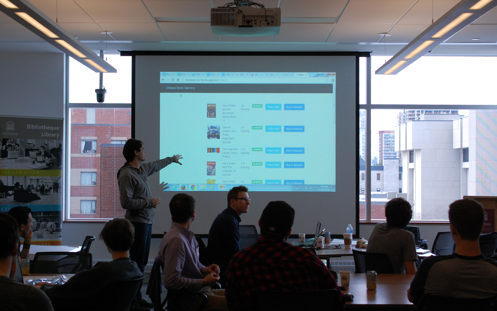
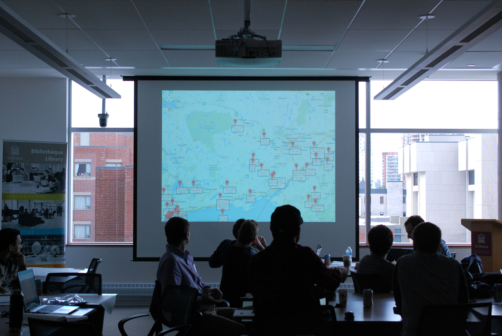
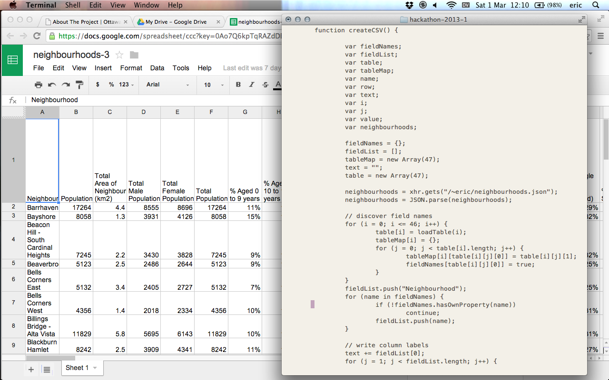

#HackUOBiblio
22.02.2014
Jeanette Hatherill | @JeanetteAnneH
Catherine McGoveran | @kittmcg
Sarah Simpkin | @sarahsimpkin


Today's presentation
Planning and preparation
Library data showcase
Participant projects
Feedback and lessons learned
What's next for hacking at uOBiblio
Planification et préparation
 You can always find inspiration (and the best sandwiches) at La Bottega
You can always find inspiration (and the best sandwiches) at La Bottega
Pitching for a hackfest
reaching out, demystifying, building profile, making connections, starting dialogue...
Marketing & promotion
Three cheers for Dave
Pre-hack workshop
City of Ottawa 311 service requests (2012 Q1) + ward boundariesDéroulement de la journée
- 8 h 45 Caféine et collation
- 9 h 15 Présentations et accueil de la Bibliothèque
- 9 h 30 Idées de projets et propositions
- 10 h Formation des équipes et début du hackfest
- 12 h Dîner
- 13 h Poursuite du hackfest
- 17 h Présentation des projets finis et mot de la fin
- 17 h 30 5 à 7 #OpenDataDay
Library data showcase
Google analytics from library website
uOResearch thesis metadata
ILL lender and borrower
Circulation over 200
Patron counts by discipline and status
OPL MARC records and circulation counts
Participant projects
Mike Pacione
Statistics Canada - CANSIM tables 051-0001 (population) and 105-0501 (health indicators)City of Ottawa open data - outdoor rinksOPL + Amazon

OPL + Amazon
 Amazon product advertising API and OPL Bibliocommons searchFlight locations + registry

Flight locations + registry
 Federal government open data - Civil aircraft register database and streaming flight dataEric, Filsan & Alexis
 City of Ottawa open data - tennis and basketball courts and Ottawa neighbourhood studyFeedback & lessons learned
“Was a great opportunity to try new things and to collaborate with more experienced hackers. I'll definitely be less hesitant to explore open data projects and development projects of my own.”
- #HackUOBiblio participant
“J'ai aimé le contact personnel et les ressources disponibles, ainsi que la liberté en terme d'apprentissage. Les personnes étaient très accueillantes et la communication était efficace. Hackfest était très professionnel et organisé. Le local et l'atmosphère étaient idéals. J'ai apprécié le fait qu'il y avait des gens pour aider. ”
- #HackUOBiblio participant
"More examples at the beginning of the session for beginners. It's one thing to read about stuff ahead of time, but it would be nice to actually discuss a few examples and how they were done."
"Optional beginner group with a few learning exercises."
"More interactive workshop, maybe with a how to hack 101."
- #HackUOBiblio participants
Leçons tirées
Plus de café
Meilleure planification pour sauvegarder et partager les projets
Ateliers pratiques avant l'événement et pendant la journée
Plus de barres à prises multiples
What's next?
Discussion
What role can the library plan in relation to open data?
A-t-il des outils qui intéressent vos usagers?
Are there areas where we need more support?
Qu'est-ce qui vous empêche de jouer avec les données?
Could datasets you work with be made available?